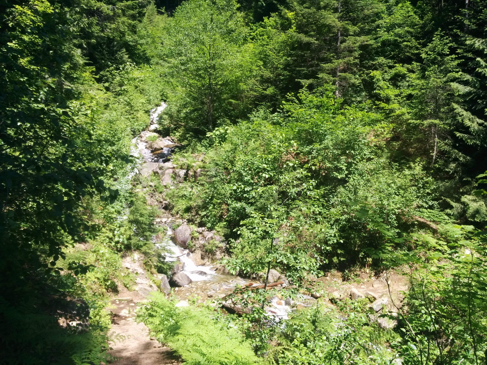
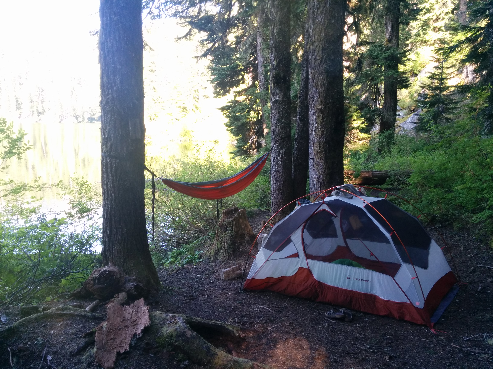
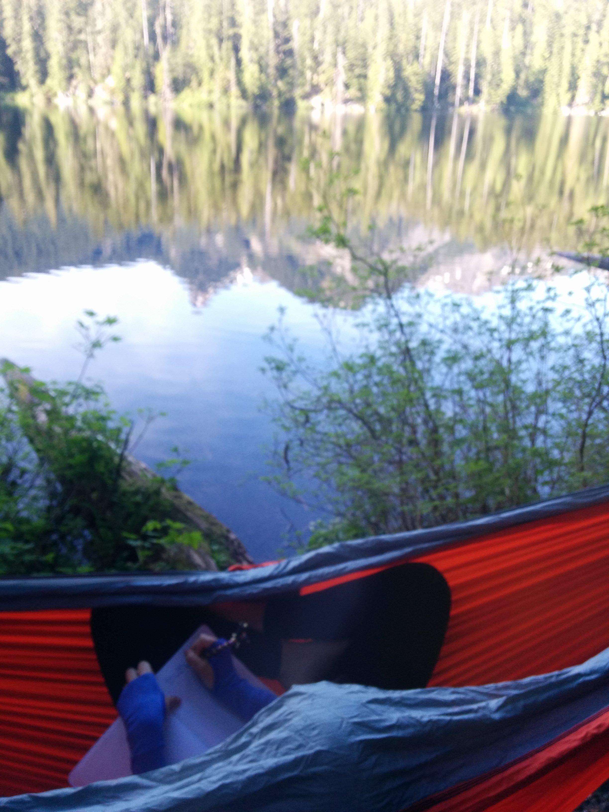
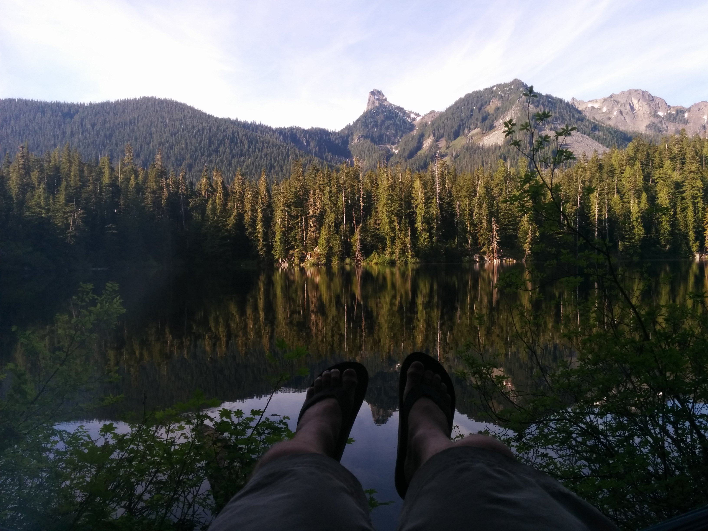
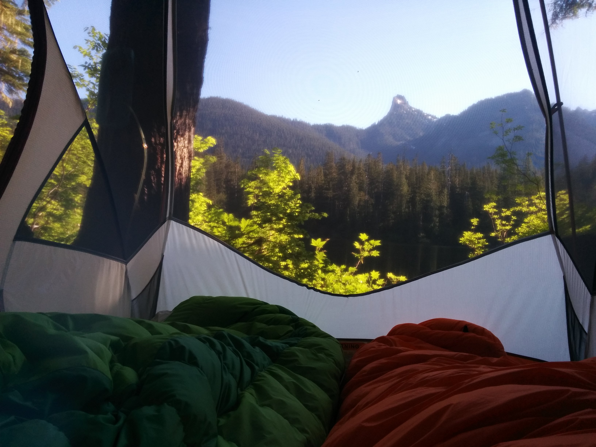
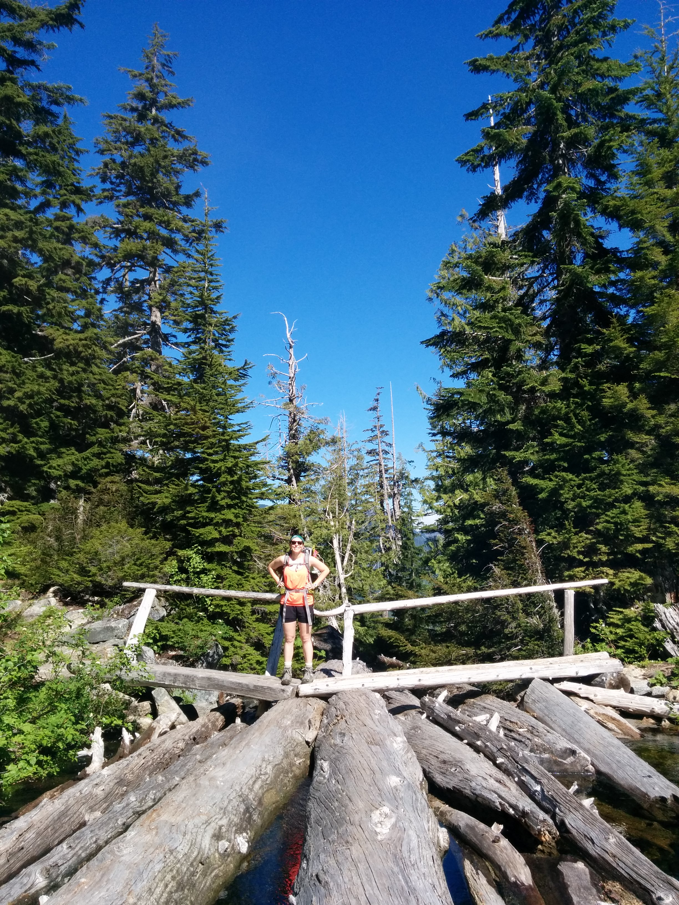

Peggy and I ventured out Sunday for an overnight up in the Alpine Lakes Wilderness. I'd heard that Pratt Lake is a heavily used trail, and it's tough to find solitude. The parking lot was full and overflowing by the time we pulled up around noon on Sunday, but we managed to find a spot right by the trailhead in the lot.
It was approaching 85 degrees as we departed, which slowed us down a bit. The trail is mostly covered in lush forest though -- there are just a few exposed spots until you descend into the basin, which opens up quite a bit more.

People were coming down in droves, including overnight backpackers, day hikers, and a few trail runners.
I didn't expect the decent into Pratt Lake Basin to be as significant as it was. I'd previously camped at Island Lake, which forks and continues on and up from the Pratt Lake trail at the top of the mountain ridge. Pratt Lake Basin on the other hand, as one might imagine ("Basin") is a trek down (and more-so back out).
We arrived at Pratt after nearly three and a half hours, but given the limited number of campsites I could immediately spot lakeside, I opted to continue on to Lower Tuscohatchie, about 10 minutes further.
There were bugs everywhere. None were biting, but they were (as always) pretty annoying (bzzzzzz!).
I walked around the lake rim and found a very secluded and covered spot right next to the water for us to set up shop. There was no one else in sight, and flowing water nearby to add to the ambiance.

We set up the tent, the hammock, and spent some quality time by the lake. The views were spectacular with Kaleetan Peak dominating the skyline.


One other hiker showed up in the evening, but was courteous enough to hike around to the other side of the lake and camp a ways away.
No rainfly was necessary, and waking up a few times in the night I could see the stars shining brightly. The sun was nice enough to wake us up in the morning, but the trees kept it from beating down and overheating us.

The hike out was about an hour and fifteen minutes faster, and since we left earlier in the morning, it was slightly cooler as well.
Definitely want to come back, potentially venturing further out from Lower Tuscohatchie and exploring more of the Alpine Lakes Wildness (good "base camp" as many have said). Definitely see a Kaleetan summit in my future too.
